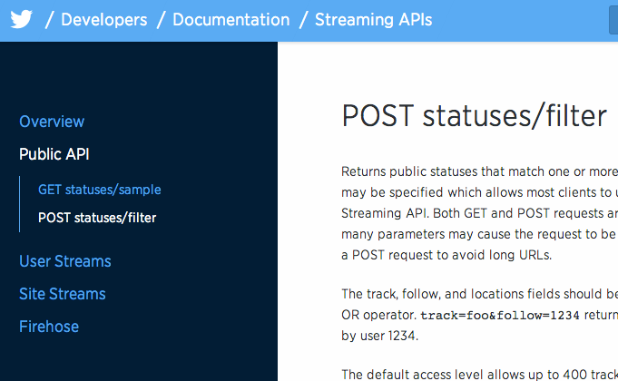
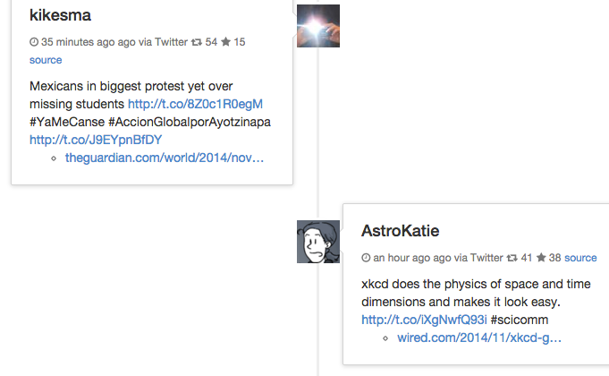
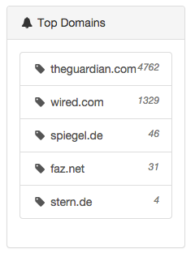
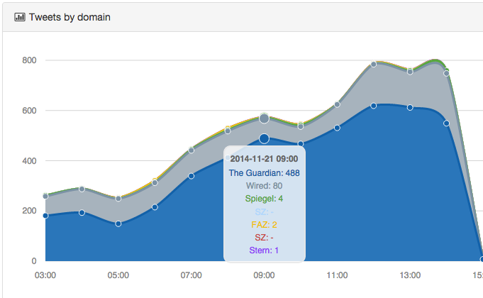
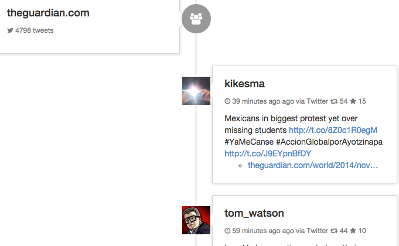

Daniel Trümper / @truemped
distributed, RESTful, JSON, Lucene
Create a simple news aggregator using Twitter
Rank news by retweets, favorites and time
Insights into data
Filter news
Twitter Streaming API
Hacker News/Reddit style relevance
Simple aggregrations on domains
Histogram Aggregations
Top Hits Aggregations for grouping

https://dev.twitter.com/streaming/reference/post/statuses/filter
track=theguardian com matches tweets with links to theguardian.com
also contains the expanded full url
"urls": [{
"url": "http://t.co/9bsuTIFUWs",
"indices": [29, 51],
"expanded_url": "http://www.theguardian.com/teacher-network/teacher-blog/2014/nov/17/how-to-teach-anti-bullying",
"display_url": "theguardian.com/teacher-networ…"
}]
Using twython library
class Streamer(TwythonStreamer):
def __init__(self, es):
self._es = es
def on_success(self, tweet):
self._es.index('news-tweets', 'tweet',
tweet['id_str'], json.dumps(tweet))
Streamer(Elasticsearch()).statuses.filter(
track='theguardian com', language='de,en')
def on_success(self, tweet):
if 'retweeted_status' in tweet:
tweet = tweet['retweeted_status']
self._es.index('news-tweets', 'tweet',
tweet['id_str'], json.dumps(tweet))
Twitter notifies about deleted tweets
def on_success(self, tweet):
if 'delete' in tweet:
status_id = tweet['delete']['status']['id']
self._es.delete('news-tweets', 'tweet', status_id)
return
if 'retweeted_status' in tweet:
tweet = tweet['retweeted_status']
self._es.index('news-tweets', 'tweet',
tweet['id_str'], json.dumps(tweet))
Add domain to the urls
This allows for a simple filtering per news paper
"urls": [{
"url": "http://t.co/9bsuTIFUWs",
"indices": [29, 51],
"expanded_url": "http://www.theguardian.com/teacher-network/teacher-blog/2014/nov/17/how-to-teach-anti-bullying",
"display_url": "theguardian.com/teacher-networ…",
"domain": "theguardian.com"
}]
def on_success(self, tweet):
if 'delete' in tweet:
status_id = tweet['delete']['status']['id']
self._es.delete('news-tweets', 'tweet', status_id)
return
if 'retweeted_status' in tweet:
tweet = tweet['retweeted_status']
for url in tweet['entities']['urls']:
if 'theguardian.com' in url['expanded_url']:
url['domain'] = 'theguardian.com'
self._es.index('news-tweets', 'tweet',
tweet['id_str'], json.dumps(tweet))
Ranking news by importance
Two components: votes and time since published
$$score = votes / (t+2)^{g}$$
Nice blog post about HN/Reddit scoring: http://amix.dk/blog/post/19574
g determines the importance of time
smaller g means more influence of votes
def scoring(now, g=1.8):
return {"function_score": {
"query": {"match_all": {}},
"script_score": {
"params": {
"g": g,
"now": now,
},
"script": ("(doc['favorite_count'].value + " +
"doc['retweet_count'].value) / " +
"pow((now - doc['created_at'].value + 2), g)")
}}}
Retrieve the top domains and the top hashtags
def domain():
return {'aggregations': {'domains': {
'terms': {'field': 'entities.urls.domain'}}}}
def hashtags():
return {'aggregations': {'hashtags': {
'terms': {'field': 'entities.hashtags.text'}}}}
{"aggregations": {
"domains": {
"doc_count_error_upper_bound": 0,
"sum_other_doc_count": 0,
"buckets": [
{
"key": "theguardian.com",
"doc_count": 5682
},
{
"key": "wired.com",
"doc_count": 1665
}
]
}
}}
def domain_histogram():
return {'aggregations': {'date_hist': {
'date_histogram': {
'field': 'created_at',
'interval': '1h'
}}}}
{"aggregations": {
"date_hist": {
"buckets": [
{
"key_as_string": "Fri Nov 21 05:00:00 +0000 2014",
"key": 1416546000000,
"doc_count": 253
},
{
"key_as_string": "Fri Nov 21 06:00:00 +0000 2014",
"key": 1416549600000,
"doc_count": 321
}
]
}}}
def domain_histogram():
return {'aggregations': {
'date_hist': {
'date_histogram': {
'field': 'created_at',
'interval': '1h'
},
'aggregations': {
'domains': {
'terms': {
'field': 'entities.urls.domain'
}}}}}}
{"aggregations": {
"date_hist": {
"buckets": [
{
"key_as_string": "Fri Nov 21 05:00:00 +0000 2014",
"key": 1416546000000,
"doc_count": 253,
"domain": {
"doc_count_error_upper_bound": 0,
"sum_other_doc_count": 0,
"buckets": [
{
"key": "theguardian.com",
"doc_count": 149
},
{
"key": "wired.com",
"doc_count": 100
}
...
]
}
}
]
}
}}
def topdomains():
return {'aggregations': {'top_tweets': {
'terms': {'field': 'entities.urls.domain'}}
}}
def topdomains():
return {'aggregations': {'top_tweets': {
'terms': {'field': 'entities.urls.domain'}},
'aggregations': {'top_domain_hits': {
'top_hits': {}
}}}
...
"buckets": [{"key": "theguardian.com",
"doc_count": 6361,
"top_domain_hits": {
"hits": {
"total": 6361,
"max_score": 1.2440135e-14,
"hits": [{
"_index": "news-tweets",
"_type": "tweet",
"_id": "535810990223687680",
"_score": 1.2440135e-14,
"_source": {...}
},{
"_index": "news-tweets",
"_type": "tweet",
"_id": "535815107364651008",
"_score": 8.234902e-15,
"_source": {...}
}
...
]}}}]
Currently extra aggregator is necessary to ensure sorting of terms buckets
def topdomains():
return {'aggregations': {'top_tweets': {
'terms': {'field': 'entities.urls.domain',
'order': {'top_term': 'desc'}}},
'aggregations': {
'top_domain_hits': {'top_hits': {}},
'top_term': {'max': {'script': '_score'}}
}}}